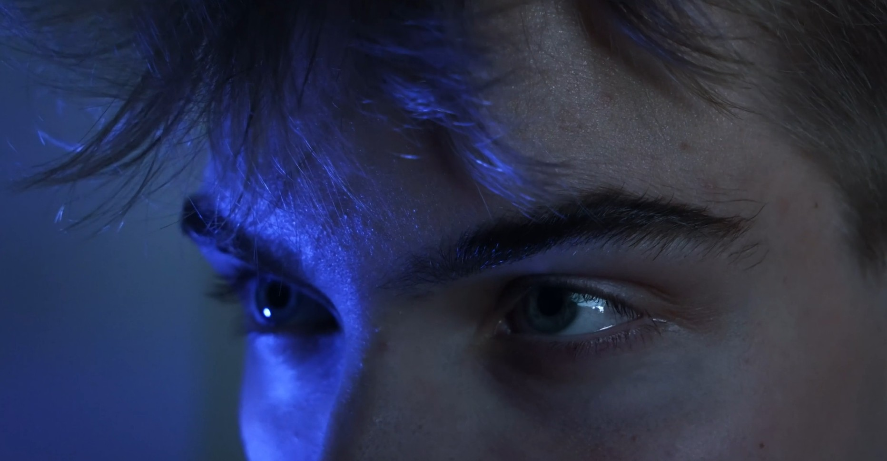

Editor · 2026

Eight Miles High Editor · 2026
01 / Selected work
In the edit.
SCAD capstone film
Editor · 2026
02 / Filmography
Behind the stories.
Editing and production credits.
03 / About
A lifelong love
of making films.
I'm Molly Hartman, a film and video editor from the New Jersey Pine Barrens and a graduate of the Savannah College of Art and Design, where I earned a BFA in Film & Television.
From family camcorder videos to student productions, I've been making films since childhood. My passion is helping stories come to life through creative editing.
Outside of film, I enjoy illustration and web design.
04 / Contact